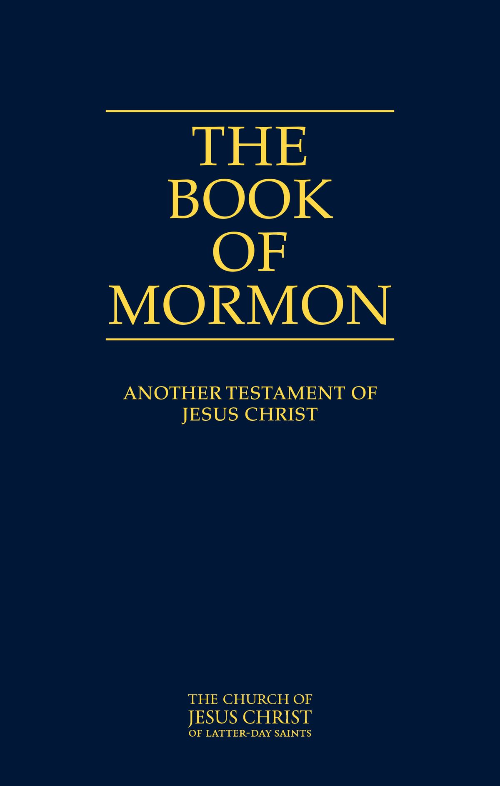
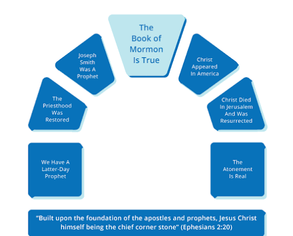

The Book of Mormon: Keystone of Our Religion
Discover why the Book of Mormon is central to our faith, our testimony of Jesus Christ, and the Restoration.

My Why
- I love the Book of Mormon and have seen how it has touched others and changed their lives.
- I want to gain a deeper understanding of the Book of Mormon and its teachings.
- In my personal life, I have seen the power the Book of Mormon had in my dad's conversion and in bringing my mother back to the gospel.
For my "why," I have many reasons, and I could keep adding to the list. My main reason is that I love this gospel, I love the Savior, and I love the prophets. As I learned more about the history of how the Book of Mormon became available to us, I felt a desire to gain a deeper understanding of it.
The sacrifice, love, and dedication that went into bringing this book to the world remind me that Heavenly Father wanted us to have it. It testifies of Jesus Christ, and I believe Heavenly Father knew how much it would help me in my own life.
I have already seen the blessings and power of the Book of Mormon in my life and in the lives of my family members. My "why" comes down to this: I love Heavenly Father and the Savior, and I want to keep growing closer to Them through the Book of Mormon.
What Is the Keystone?

When we say the Book of Mormon is the keystone of our religion, we mean it is one of the most important foundations of The Church of Jesus Christ of Latter-day Saints.
Joseph Smith taught that the Book of Mormon is the keystone of our religion in three important ways:
1. The Keystone of Our Testimony of Jesus Christ
The Book of Mormon testifies that Jesus Christ is our Savior and Redeemer. It teaches us about His love, His Atonement, and His plan for us.
2. The Keystone of Our Doctrine
The Book of Mormon teaches the fullness of the gospel of Jesus Christ and helps us understand Heavenly Father's plan for His children.
3. The Keystone of Our Testimony of the Restoration
If the Book of Mormon is true, then Joseph Smith was a prophet of God, and the Church was restored through him. This helps us know that God restored His gospel and priesthood authority to the earth.
Think of it like an arch: a keystone is the central stone that holds an arch together. Without it, the arch would not stand the way it was designed to. In the same way, the Book of Mormon is central to our faith because it helps support our testimony of Jesus Christ and the Restoration of His Church.
My Testimony
I believe the Book of Mormon testifies of Jesus Christ and helps us come closer to Him.
I believe the Book of Mormon was translated by Joseph Smith through the power of God.
I believe the Book of Mormon tells of God's dealings with people in the ancient Americas.
I believe the Book of Mormon was preserved for us in our day so we can come closer to Christ, learn of Him, and strengthen our faith.